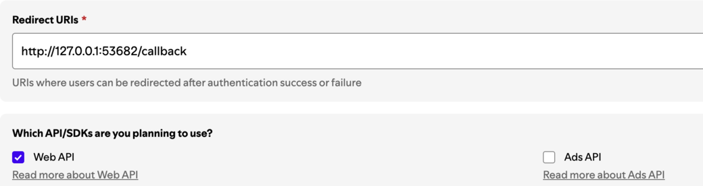
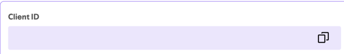
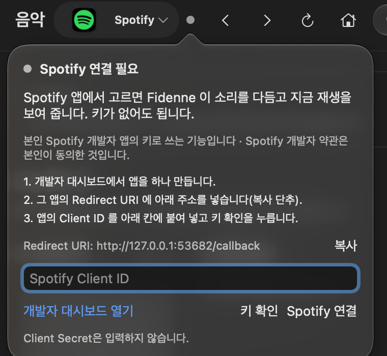
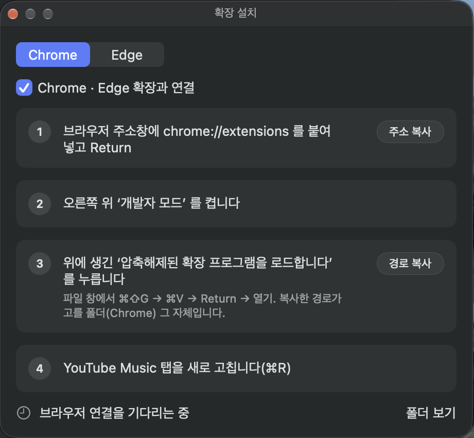

설치 안내
Fidenne,
Mac 소리를 DAC로
재생 앱이 내는 소리를 다듬어 내 DAC로 보내는 Mac용 오디오 플레이어. 설치는 여덟 걸음이면 끝납니다.
1 · 준비물
준비물은 세 가지,
외장 DAC가 필수
✓
macOS 26 이상이보다 오래된 macOS에서는 앱이 열리지 않습니다
✓
외장 DAC — 필수베타는 USB로 꽂는 외장 DAC로 듣는 것을 전제로 합니다
2 · 내려받기
설치 파일(.dmg)을
내려받으세요
받는 곳은 github.com/fidenne/fidenne/releases,
파일 이름은 Fidenne-0.5.0.dmg 입니다.
Fidenne-0.5.0.dmg디스크 이미지 파일
3 · 옮기기
응용 프로그램
폴더로 끌어 넣기
내려받은 .dmg를 두 번 눌러 열고, Fidenne을 응용 프로그램 폴더로 옮깁니다.
4 · 처음 열기
응용 프로그램에서
Fidenne을 엽니다
인터넷에서 받은 앱이라 확인 창이 뜰 수 있습니다. 열기를 누르세요.
“Fidenne”은 인터넷에서 내려받은 앱입니다. 열까요?
취소열기
막히면 시스템 설정 › 개인정보 보호 및 보안에서 허용합니다.
5 · 처음 설정
“처음 설정” 네 단계
1
소리가 나갈 DAC모르겠으면 “나중에 고르기”
2
소리를 가져오는 방법처음 골라진 Fidenne Inlet을 그대로 두어도 됩니다
3
macOS가 물어볼 것들지금은 묻지 않고, 쓸 때 묻습니다
4
이용 약관(필수) · 인터넷 연결 · 진단 기록(선택)약관에 동의해야 시작합니다 · 선택 칸은 꺼 두고 써도 됩니다
6 · 권한
macOS가 물으면
“허용”
오디오 녹음 · 시스템 오디오다른 앱의 소리를 받을 때
마이크Fidenne Inlet 등 입력 장치로 받을 때 — 소리를 저장하거나 밖으로 보내지 않습니다
자동화Apple Music · Spotify의 곡 정보를 읽고 재생을 조작할 때
거절했다면 시스템 설정 › 개인정보 보호 및 보안에서 다시 켭니다.
7 · 첫 재생 전에
음량을 먼저
낮추세요
처음 재생을 누르면 “음량을 낮추고 시작하세요” 안내가 뜹니다. DAC · 앰프 음량을 0이나 아주 낮게 내리고 낮췄어요, 시작을 누른 뒤, 들으면서 천천히 올립니다.
8 · 막혔을 때
소리가 안 나면
여기부터
도움말 › 문제 제보용 진단 만들기…보내기 전에 내용을 확인할 수 있습니다
문의: fidenne.support@gmail.comGitHub이 있으면 github.com/fidenne/fidenne/issues 에 올려도 됩니다
진단 번들은 꼭 이메일로
선택 · Spotify 연결 ①
Spotify 연결: 내 앱 만들기
키 없이도 소리는 다듬습니다. 검색 · 재생목록 · 조종은 내 Spotify 앱의 키로 씁니다.

1
음악 › Spotify 옆 점(●) › 개발자 대시보드 열기 → Create app로그인 · 앱 이름과 설명은 아무거나 · 사이트의 단추 이름은 바뀔 수 있습니다
2
Redirect URIs에 Fidenne의 복사 주소를 붙여 넣고 Add
3
Web API와 약관 동의를 체크하고 Save
선택 · Spotify 연결 ②
Spotify 연결: 키 넣기
재생 조종(재생 · 곡 넘기기)은 Spotify Premium이 필요합니다.

4
만든 앱의 Client ID 복사Client Secret은 넣지 않습니다
5
Fidenne 칸에 붙여 넣고 키 확인 → Spotify 연결
6
브라우저에서 동의“Spotify 인증 응답을 받았습니다”가 뜨면 Fidenne으로 돌아갑니다

선택 · YouTube Music
YouTube Music (실험 기능, 선택)
설정 › 일반 맨 위 스위치로 켭니다. 확장은 Chrome이나 Edge 한 곳에만.
1
설정 › 개인정보 › Chrome · Edge 확장과 연결 켜기
2
설치 안내…의 네 단계로 확장 불러오기개발자 모드 · 압축 푼 확장 · 경로 복사
3
메모리 절약 예외에 music.youtube.com
4
재생목록은 Google 테이크아웃 파일로음악 › YouTube Music › 내 재생목록 › YouTube Music 재생목록 가져오기…
